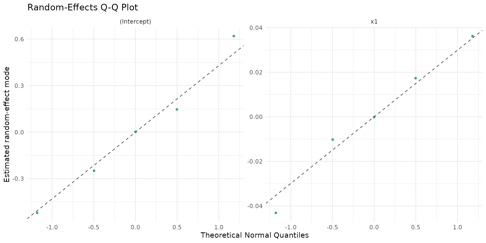
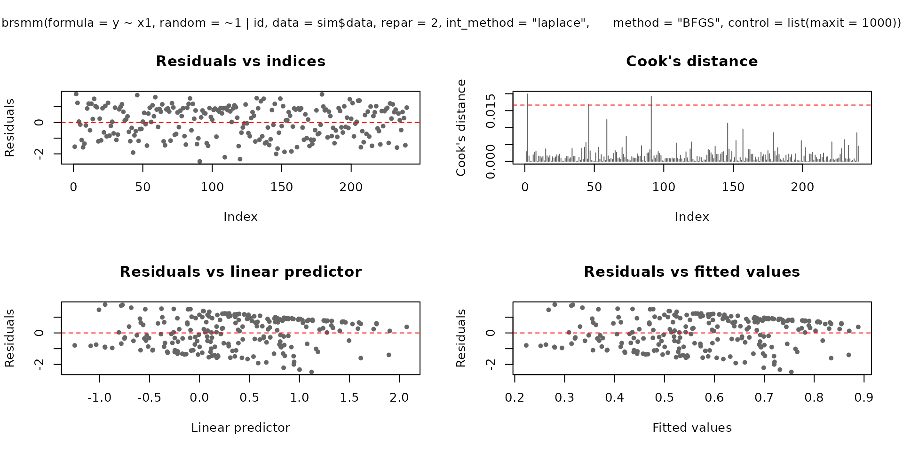
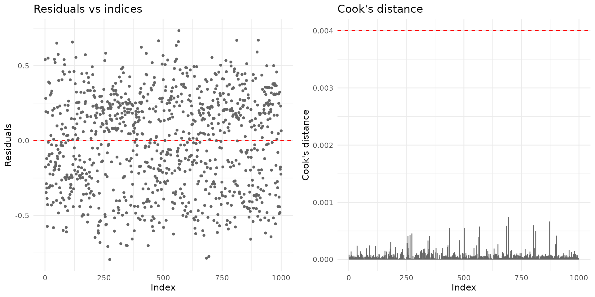
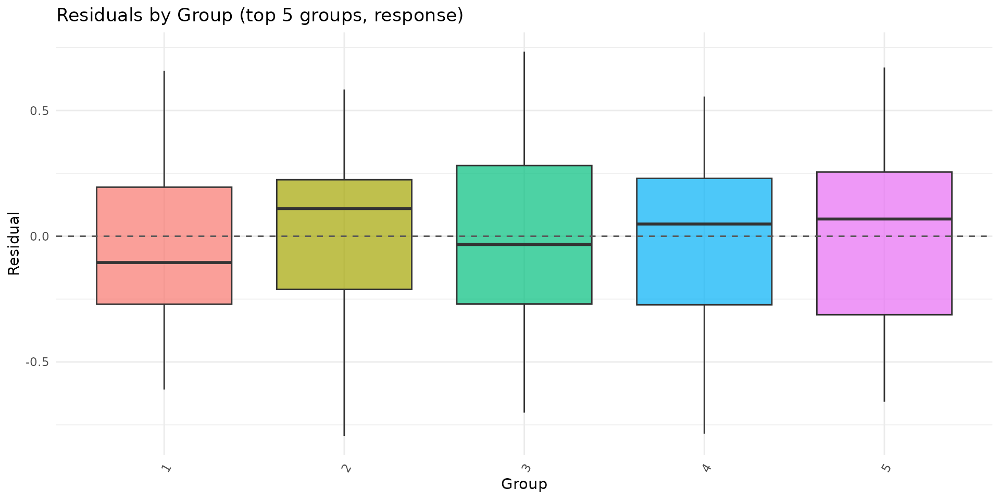

Overview
brsmm() extends brs() to clustered data by
adding Gaussian random effects in the mean submodel while preserving the
interval-censored beta likelihood for scale-derived outcomes.
This vignette covers:
- full model mathematics;
- estimation by marginal maximum likelihood (Laplace approximation);
- practical use of all current
brsmmmethods; - inferential and validation workflows, including parameter recovery.
Mathematical model
Assume observations within groups , with group-specific random-effects vector .
Linear predictors
with
and
chosen by link and link_phi. The
random-effects design row
is defined by random = ~ terms | group.
Beta parameterization
For each
,
repar maps to beta shape parameters
via brs_repar().
Conditional contribution by censoring type
Each observation contributes:
where are interval endpoints on , is beta density, and is beta CDF.
Random-effects distribution
where
is a symmetric positive-definite covariance matrix. Internally,
brsmm() optimizes a packed lower-Cholesky parameterization
(diagonal entries on log-scale for positivity).
Laplace approximation used by brsmm()
Define and , with curvature Then
brsmm() maximizes the approximated
with stats::optim(), and computes group-level posterior
modes
.
For
,
this reduces to the scalar random-intercept formula.
Simulating clustered scale data
The next helper simulates data from a known mixed model to illustrate fitting, inference, and recovery checks.
sim_brsmm_data <- function(seed = 3501L, g = 24L, ni = 12L,
beta = c(0.20, 0.65),
gamma = c(-0.15),
sigma_b = 0.55) {
set.seed(seed)
id <- factor(rep(seq_len(g), each = ni))
n <- length(id)
x1 <- rnorm(n)
b_true <- rnorm(g, mean = 0, sd = sigma_b)
eta_mu <- beta[1] + beta[2] * x1 + b_true[as.integer(id)]
eta_phi <- rep(gamma[1], n)
mu <- plogis(eta_mu)
phi <- plogis(eta_phi)
shp <- brs_repar(mu = mu, phi = phi, repar = 2)
y <- round(stats::rbeta(n, shp$shape1, shp$shape2) * 100)
list(
data = data.frame(y = y, x1 = x1, id = id),
truth = list(beta = beta, gamma = gamma, sigma_b = sigma_b, b = b_true)
)
}
sim <- sim_brsmm_data(
g = 5,
ni = 200,
beta = c(0.20, 0.65),
gamma = c(-0.15),
sigma_b = 0.55
)
str(sim$data)
#> 'data.frame': 1000 obs. of 3 variables:
#> $ y : num 92 0 71 59 21 5 34 1 19 0 ...
#> $ x1: num -0.3677 -2.0069 -0.0469 -0.2468 0.7634 ...
#> $ id: Factor w/ 5 levels "1","2","3","4",..: 1 1 1 1 1 1 1 1 1 1 ...Fitting brsmm()
fit_mm <- brsmm(
y ~ x1,
random = ~ 1 | id,
data = sim$data,
repar = 2,
int_method = "laplace",
method = "BFGS",
control = list(maxit = 1000)
)
summary(fit_mm)
#>
#> Call:
#> brsmm(formula = y ~ x1, random = ~1 | id, data = sim$data, repar = 2,
#> int_method = "laplace", method = "BFGS", control = list(maxit = 1000))
#>
#> Randomized Quantile Residuals:
#> Min 1Q Median 3Q Max
#> -2.8356 -0.6727 -0.0422 0.6040 3.0833
#>
#> Coefficients (mean model with logit link):
#> Estimate Std. Error z value Pr(>|z|)
#> (Intercept) 0.26237 0.18121 1.448 0.148
#> x1 0.63844 0.04381 14.573 <2e-16 ***
#> ---
#> Signif. codes: 0 '***' 0.001 '**' 0.01 '*' 0.05 '.' 0.1 ' ' 1
#>
#> Phi coefficients (precision model with logit link):
#> Estimate Std. Error z value Pr(>|z|)
#> (phi)_(Intercept) -0.10608 0.04044 -2.623 0.00872 **
#> ---
#> Signif. codes: 0 '***' 0.001 '**' 0.01 '*' 0.05 '.' 0.1 ' ' 1
#>
#> Random-effects parameters (Cholesky scale):
#> Estimate Std. Error z value Pr(>|z|)
#> (re_chol_logsd)_(Intercept)|id -0.9293 0.3338 -2.784 0.00537 **
#> ---
#> Signif. codes: 0 '***' 0.001 '**' 0.01 '*' 0.05 '.' 0.1 ' ' 1
#> ---
#> Mixed beta interval model (Laplace)
#> Observations: 1000 | Groups: 5
#> Log-likelihood: -4182.1094 on 4 Df | AIC: 8372.2188 | BIC: 8391.8498
#> Pseudo R-squared: 0.1815
#> Number of iterations: 37 (BFGS)
#> Censoring: 852 interval | 39 left | 109 rightRandom intercept + slope example
The model below includes random intercept and random slope for
x1:
fit_mm_rs <- brsmm(
y ~ x1,
random = ~ 1 + x1 | id,
data = sim$data,
repar = 2,
int_method = "laplace",
method = "BFGS",
control = list(maxit = 1200)
)
summary(fit_mm_rs)
#>
#> Call:
#> brsmm(formula = y ~ x1, random = ~1 + x1 | id, data = sim$data,
#> repar = 2, int_method = "laplace", method = "BFGS", control = list(maxit = 1200))
#>
#> Randomized Quantile Residuals:
#> Min 1Q Median 3Q Max
#> -3.6105 -0.6741 -0.0459 0.6224 3.9925
#>
#> Coefficients (mean model with logit link):
#> Estimate Std. Error z value Pr(>|z|)
#> (Intercept) 0.2621 0.1805 1.452 0.146
#> x1 0.6375 0.0455 14.012 <2e-16 ***
#> ---
#> Signif. codes: 0 '***' 0.001 '**' 0.01 '*' 0.05 '.' 0.1 ' ' 1
#>
#> Phi coefficients (precision model with logit link):
#> Estimate Std. Error z value Pr(>|z|)
#> (phi)_(Intercept) -0.10665 0.04046 -2.636 0.0084 **
#> ---
#> Signif. codes: 0 '***' 0.001 '**' 0.01 '*' 0.05 '.' 0.1 ' ' 1
#>
#> Random-effects parameters (Cholesky scale):
#> Estimate Std. Error z value Pr(>|z|)
#> (re_chol_logsd)_(Intercept)|id -0.92945 0.33379 -2.785 0.00536 **
#> (re_chol)_x1:(Intercept)|id -0.02742 0.04459 -0.615 0.53852
#> (re_chol_logsd)_x1|id -7.05471 37.93692 -0.186 0.85248
#> ---
#> Signif. codes: 0 '***' 0.001 '**' 0.01 '*' 0.05 '.' 0.1 ' ' 1
#> ---
#> Mixed beta interval model (Laplace)
#> Observations: 1000 | Groups: 5
#> Log-likelihood: -4181.9196 on 6 Df | AIC: 8375.8392 | BIC: 8405.2858
#> Pseudo R-squared: 0.1815
#> Number of iterations: 64 (BFGS)
#> Censoring: 852 interval | 39 left | 109 rightCovariance structure of random effects:
kbl10(fit_mm_rs$random$D)| V1 | V2 |
|---|---|
| 0.1558 | -0.0108 |
| -0.0108 | 0.0008 |
kbl10(
data.frame(term = names(fit_mm_rs$random$sd_b), sd = as.numeric(fit_mm_rs$random$sd_b)),
digits = 4
)| term | sd |
|---|---|
| (Intercept) | 0.3948 |
| x1 | 0.0274 |
| (Intercept) | x1 |
|---|---|
| -0.5205 | 0.0362 |
| 0.6196 | -0.0430 |
| -0.2488 | 0.0173 |
| 0.1465 | -0.0102 |
| 0.0024 | -0.0002 |
Estudos adicionais dos efeitos aleatórios (numéricos e visuais)
Seguindo práticas de pacotes mistos consolidados, o pacote agora permite um estudo dedicado dos efeitos aleatórios com foco em:
- estrutura e correlação;
- distribuição empírica dos modos por grupo;
- intensidade de shrinkage empírico;
- diagnósticos visuais específicos para os componentes aleatórios.
re_study <- brsmm_re_study(fit_mm_rs)
print(re_study)
#>
#> Random-effects study
#> Groups: 5
#>
#> Summary by term:
#> term sd_model mean_mode sd_mode shrinkage_ratio shapiro_p
#> (Intercept) 0.3948 -1e-04 0.4296 1 0.9641
#> x1 0.0274 0e+00 0.0298 1 0.9641
#>
#> Estimated covariance matrix D:
#> [,1] [,2]
#> [1,] 0.1558 -0.0108
#> [2,] -0.0108 0.0008
#>
#> Estimated correlation matrix:
#> [,1] [,2]
#> [1,] 1.0000 -0.9995
#> [2,] -0.9995 1.0000
kbl10(re_study$summary)| term | sd_model | mean_mode | sd_mode | shrinkage_ratio | shapiro_p |
|---|---|---|---|---|---|
| (Intercept) | 0.3948 | -1e-04 | 0.4296 | 1 | 0.9641 |
| x1 | 0.0274 | 0e+00 | 0.0298 | 1 | 0.9641 |
kbl10(re_study$D)| V1 | V2 |
|---|---|
| 0.1558 | -0.0108 |
| -0.0108 | 0.0008 |
kbl10(re_study$Corr)| V1 | V2 |
|---|---|
| 1.0000 | -0.9995 |
| -0.9995 | 1.0000 |
Visualizações sugeridas para efeitos aleatórios:
if (requireNamespace("ggplot2", quietly = TRUE)) {
autoplot.brsmm(fit_mm_rs, type = "ranef_caterpillar")
autoplot.brsmm(fit_mm_rs, type = "ranef_density")
autoplot.brsmm(fit_mm_rs, type = "ranef_pairs")
autoplot.brsmm(fit_mm_rs, type = "ranef_qq")
}
Core methods
Coefficients and random effects
coef(fit_mm, model = "random") returns packed
random-effect covariance parameters on optimizer scale (lower-Cholesky,
with log-diagonal). For random-intercept models this simplifies to
.
kbl10(
data.frame(
parameter = names(coef(fit_mm, model = "full")),
estimate = as.numeric(coef(fit_mm, model = "full"))
),
digits = 4
)| parameter | estimate |
|---|---|
| (Intercept) | 0.2624 |
| x1 | 0.6384 |
| (phi)_(Intercept) | -0.1061 |
| (re_chol_logsd)_(Intercept)|id | -0.9293 |
kbl10(
data.frame(
log_sigma_b = as.numeric(coef(fit_mm, model = "random")),
sigma_b = as.numeric(exp(coef(fit_mm, model = "random")))
),
digits = 4
)| log_sigma_b | sigma_b |
|---|---|
| -0.9293 | 0.3948 |
| x |
|---|
| -0.5220 |
| 0.6187 |
| -0.2499 |
| 0.1420 |
| 0.0083 |
For random intercept + slope models:
kbl10(
data.frame(
parameter = names(coef(fit_mm_rs, model = "random")),
estimate = as.numeric(coef(fit_mm_rs, model = "random"))
),
digits = 4
)| parameter | estimate |
|---|---|
| (re_chol_logsd)_(Intercept)|id | -0.9294 |
| (re_chol)_x1:(Intercept)|id | -0.0274 |
| (re_chol_logsd)_x1|id | -7.0547 |
kbl10(fit_mm_rs$random$D)| V1 | V2 |
|---|---|
| 0.1558 | -0.0108 |
| -0.0108 | 0.0008 |
Variance-covariance, summary and likelihood criteria
| mean.Estimate | mean.Std..Error | mean.z.value | mean.Pr…z.. | precision.Estimate | precision.Std..Error | precision.z.value | precision.Pr…z.. | random.Estimate | random.Std..Error | random.z.value | random.Pr…z.. | |
|---|---|---|---|---|---|---|---|---|---|---|---|---|
| (Intercept) | 0.2624 | 0.1812 | 1.4479 | 0.1477 | -0.1061 | 0.0404 | -2.623 | 0.0087 | -0.9293 | 0.3338 | -2.7839 | 0.0054 |
| x1 | 0.6384 | 0.0438 | 14.5727 | 0.0000 | -0.1061 | 0.0404 | -2.623 | 0.0087 | -0.9293 | 0.3338 | -2.7839 | 0.0054 |
kbl10(
data.frame(
logLik = as.numeric(logLik(fit_mm)),
AIC = AIC(fit_mm),
BIC = BIC(fit_mm),
nobs = nobs(fit_mm)
),
digits = 4
)| logLik | AIC | BIC | nobs |
|---|---|---|---|
| -4182.109 | 8372.219 | 8391.85 | 1000 |
Fitted values, prediction and residuals
kbl10(
data.frame(
mu_hat = head(fitted(fit_mm, type = "mu")),
phi_hat = head(fitted(fit_mm, type = "phi")),
pred_mu = head(predict(fit_mm, type = "response")),
pred_eta = head(predict(fit_mm, type = "link")),
pred_phi = head(predict(fit_mm, type = "precision")),
pred_var = head(predict(fit_mm, type = "variance"))
),
digits = 4
)| mu_hat | phi_hat | pred_mu | pred_eta | pred_phi | pred_var |
|---|---|---|---|---|---|
| 0.3789 | 0.4735 | 0.3789 | -0.4943 | 0.4735 | 0.1114 |
| 0.1764 | 0.4735 | 0.1764 | -1.5409 | 0.4735 | 0.0688 |
| 0.4281 | 0.4735 | 0.4281 | -0.2895 | 0.4735 | 0.1159 |
| 0.3972 | 0.4735 | 0.3972 | -0.4172 | 0.4735 | 0.1134 |
| 0.5567 | 0.4735 | 0.5567 | 0.2278 | 0.4735 | 0.1169 |
| 0.3379 | 0.4735 | 0.3379 | -0.6728 | 0.4735 | 0.1059 |
kbl10(
data.frame(
res_response = head(residuals(fit_mm, type = "response")),
res_pearson = head(residuals(fit_mm, type = "pearson"))
),
digits = 4
)| res_response | res_pearson |
|---|---|
| 0.5411 | 1.6211 |
| -0.1764 | -0.6725 |
| 0.2819 | 0.8279 |
| 0.1928 | 0.5726 |
| -0.3467 | -1.0142 |
| -0.2879 | -0.8845 |
Diagnostic plotting methods
plot.brsmm() supports base and ggplot2 backends:
plot(fit_mm, which = 1:4, type = "pearson")
if (requireNamespace("ggplot2", quietly = TRUE)) {
plot(fit_mm, which = 1:2, gg = TRUE)
}
autoplot.brsmm() provides focused ggplot
diagnostics:
if (requireNamespace("ggplot2", quietly = TRUE)) {
autoplot.brsmm(fit_mm, type = "calibration")
autoplot.brsmm(fit_mm, type = "score_dist")
autoplot.brsmm(fit_mm, type = "ranef_qq")
autoplot.brsmm(fit_mm, type = "residuals_by_group")
}
Prediction with newdata
If newdata contains unseen groups,
predict.brsmm() uses random effect equal to zero for those
levels.
nd <- sim$data[1:8, c("x1", "id")]
kbl10(
data.frame(pred_seen = as.numeric(predict(fit_mm, newdata = nd, type = "response"))),
digits = 4
)| pred_seen |
|---|
| 0.3789 |
| 0.1764 |
| 0.4281 |
| 0.3972 |
| 0.5567 |
| 0.3379 |
| 0.4601 |
| 0.3268 |
nd_unseen <- nd
nd_unseen$id <- factor(rep("new_cluster", nrow(nd_unseen)))
kbl10(
data.frame(pred_unseen = as.numeric(predict(fit_mm, newdata = nd_unseen, type = "response"))),
digits = 4
)| pred_unseen |
|---|
| 0.5069 |
| 0.2652 |
| 0.5578 |
| 0.5262 |
| 0.6791 |
| 0.4624 |
| 0.5895 |
| 0.4500 |
The same logic applies to random intercept + slope models:
kbl10(
data.frame(pred_rs_seen = as.numeric(predict(fit_mm_rs, newdata = nd, type = "response"))),
digits = 4
)| pred_rs_seen |
|---|
| 0.3761 |
| 0.1665 |
| 0.4280 |
| 0.3954 |
| 0.5636 |
| 0.3330 |
| 0.4617 |
| 0.3214 |
kbl10(
data.frame(pred_rs_unseen = as.numeric(predict(fit_mm_rs, newdata = nd_unseen, type = "response"))),
digits = 4
)| pred_rs_unseen |
|---|
| 0.5069 |
| 0.2655 |
| 0.5578 |
| 0.5262 |
| 0.6789 |
| 0.4624 |
| 0.5894 |
| 0.4501 |
Statistical tests and validation workflow
Wald tests (from summary)
summary.brsmm() reports Wald
-tests
for each parameter:
sm <- summary(fit_mm)
kbl10(sm$coefficients)| mean.Estimate | mean.Std..Error | mean.z.value | mean.Pr…z.. | precision.Estimate | precision.Std..Error | precision.z.value | precision.Pr…z.. | random.Estimate | random.Std..Error | random.z.value | random.Pr…z.. | |
|---|---|---|---|---|---|---|---|---|---|---|---|---|
| (Intercept) | 0.2624 | 0.1812 | 1.4479 | 0.1477 | -0.1061 | 0.0404 | -2.623 | 0.0087 | -0.9293 | 0.3338 | -2.7839 | 0.0054 |
| x1 | 0.6384 | 0.0438 | 14.5727 | 0.0000 | -0.1061 | 0.0404 | -2.623 | 0.0087 | -0.9293 | 0.3338 | -2.7839 | 0.0054 |
Esquema evolutivo e escolha por teste LR
Um fluxo prático de complexidade crescente:
-
brs(): sem efeito aleatório (ignora agrupamento); -
brsmm(..., random = ~ 1 | id): intercepto aleatório; -
brsmm(..., random = ~ 1 + x1 | id): intercepto + inclinação aleatórios.
No primeiro salto (brs
brsmm com intercepto), a hipótese
está na fronteira do espaço paramétrico. Assim, o referencial
assintótico clássico
deve ser interpretado com cautela. No segundo salto (intercepto
intercepto + inclinação), o LR com
costuma ser usado como diagnóstico prático de ganho de ajuste.
# Modelo base sem efeito aleatório
fit_brs <- brs(
y ~ x1,
data = sim$data,
repar = 2
)
# Reutiliza os ajustes mistos já estimados:
# fit_mm : random = ~ 1 | id
# fit_mm_rs : random = ~ 1 + x1 | id
tab_lr <- anova(fit_brs, fit_mm, fit_mm_rs, test = "Chisq")
kbl10(
data.frame(model = rownames(tab_lr), tab_lr, row.names = NULL),
digits = 4
)| model | Df | logLik | AIC | BIC | Chisq | Chi.Df | Pr..Chisq. |
|---|---|---|---|---|---|---|---|
| M1 (brs) | 3 | -4219.025 | 8444.051 | 8458.774 | NA | NA | NA |
| M2 (brsmm) | 4 | -4182.109 | 8372.219 | 8391.850 | 73.8319 | 1 | 0.0000 |
| M3 (brsmm) | 6 | -4181.920 | 8375.839 | 8405.286 | 0.3795 | 2 | 0.8272 |
Regra operacional de decisão (analítica):
- Se o segundo salto (
RI -> RI+RS) não melhora o ajuste (p alto), prefira o modelo com intercepto aleatório por parcimônia. - Se houver ganho robusto, adote
RI+RSe valide estabilidade dos parâmetros (especialmentesd_be matrizD) por sensibilidade e diagnóstico residual.
Residual diagnostics (quick checks)
r <- residuals(fit_mm, type = "pearson")
kbl10(
data.frame(
mean = mean(r),
sd = stats::sd(r),
q025 = as.numeric(stats::quantile(r, 0.025)),
q975 = as.numeric(stats::quantile(r, 0.975))
),
digits = 4
)| mean | sd | q025 | q975 |
|---|---|---|---|
| -0.0328 | 0.9963 | -1.8841 | 1.5617 |
Parameter recovery experiment
A single-fit recovery table can be produced directly from the previous fit:
est <- c(
beta0 = unname(coef(fit_mm, model = "mean")[1]),
beta1 = unname(coef(fit_mm, model = "mean")[2]),
sigma_b = unname(exp(coef(fit_mm, model = "random")))
)
true <- c(
beta0 = sim$truth$beta[1],
beta1 = sim$truth$beta[2],
sigma_b = sim$truth$sigma_b
)
recovery_table <- data.frame(
parameter = names(true),
true = as.numeric(true),
estimate = as.numeric(est[names(true)]),
bias = as.numeric(est[names(true)] - true)
)
kbl10(recovery_table)| parameter | true | estimate | bias |
|---|---|---|---|
| beta0 | 0.20 | 0.2624 | 0.0624 |
| beta1 | 0.65 | 0.6384 | -0.0116 |
| sigma_b | 0.55 | 0.3948 | -0.1552 |
For a Monte Carlo recovery study, repeat simulation and fitting across replicates:
mc_recovery <- function(R = 50L, seed = 7001L) {
set.seed(seed)
out <- vector("list", R)
for (r in seq_len(R)) {
sim_r <- sim_brsmm_data(seed = seed + r)
fit_r <- brsmm(
y ~ x1,
random = ~ 1 | id,
data = sim_r$data,
repar = 2,
int_method = "laplace",
method = "BFGS",
control = list(maxit = 1000)
)
out[[r]] <- c(
beta0 = unname(coef(fit_r, model = "mean")[1]),
beta1 = unname(coef(fit_r, model = "mean")[2]),
sigma_b = unname(exp(coef(fit_r, model = "random")))
)
}
est <- do.call(rbind, out)
truth <- c(beta0 = 0.20, beta1 = 0.65, sigma_b = 0.55)
data.frame(
parameter = colnames(est),
truth = as.numeric(truth[colnames(est)]),
mean_est = colMeans(est),
bias = colMeans(est) - truth[colnames(est)],
rmse = sqrt(colMeans((sweep(est, 2, truth[colnames(est)], "-"))^2))
)
}
kbl10(mc_recovery(R = 50))How this maps to automated package tests
The package test suite includes dedicated brsmm tests
for:
- fitting with Laplace integration;
- one- and two-part formulas;
- S3 methods (
coef,vcov,summary,predict,residuals,ranef); - parameter recovery under known DGP settings.
Run locally:
devtools::test(filter = "brsmm")References
Ferrari, S. L. P. and Cribari-Neto, F. (2004). Beta regression for modelling rates and proportions. Journal of Applied Statistics, 31(7), 799-815. DOI: 10.1080/0266476042000214501. Validated online via: https://doi.org/10.1080/0266476042000214501.
Pinheiro, J. C. and Bates, D. M. (2000). Mixed-Effects Models in S and S-PLUS. Springer. DOI: 10.1007/b98882. Validated online via: https://doi.org/10.1007/b98882.
Rue, H., Martino, S., and Chopin, N. (2009). Approximate Bayesian inference for latent Gaussian models by using integrated nested Laplace approximations. Journal of the Royal Statistical Society: Series B, 71(2), 319-392. DOI: 10.1111/j.1467-9868.2008.00700.x. Validated online via: https://doi.org/10.1111/j.1467-9868.2008.00700.x.